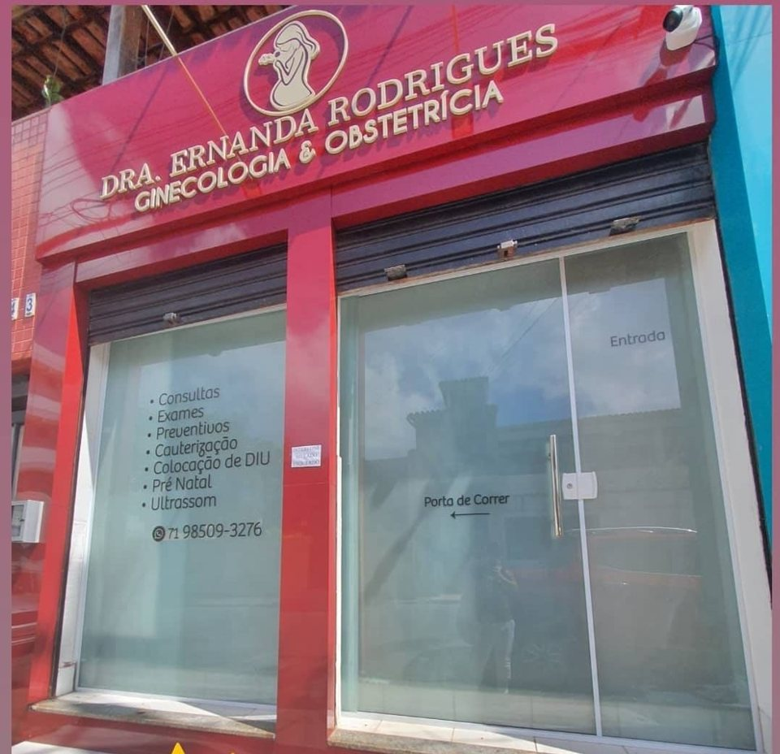

Início · Onde atendo
Ginecoaner: R. Simões Filho, 43, sala 01.
O consultório da Dra. Ernanda fica na Boca do Rio, na fachada vermelha com o nome dela no letreiro. Atendimento particular, com hora marcada pelo WhatsApp da clínica.
Endereço
Endereço
Ginecoaner
R. Simões Filho, 43, sala 01
Boca do Rio · Salvador – BA · CEP 41705-010

Horário
Horário
Horário de atendimento
Horário da ficha da clínica no Google. Confirme o dia da sua consulta com a equipe.
Mapa
Como chegar
Agendamento
Como agendar
- WhatsAppMande uma mensagem para (71) 98509-3276, o WhatsApp da Ginecoaner.
- Data e horárioA equipe confirma o dia, o horário e as orientações.
- ParticularAtendimento particular, segundo o perfil da Doctoralia: confirme valores com a equipe.
A clínica
A clínica
A clínica reúne outras profissionais de saúde da mulher, em outras áreas. Para saber quem atende o quê, consulte a equipe.
Antes de sair
Antes de sair de casa
- Confirme o horário pelo WhatsApp.
- Leve documento com foto, exames anteriores e a lista dos medicamentos em uso.
- Para o preventivo, siga as orientações recebidas ao agendar.
- Procure a fachada vermelha com o letreiro “Dra. Ernanda Rodrigues”.
Dúvidas frequentes
Perguntas comuns
Qual é o endereço?
R. Simões Filho, 43, sala 01, Boca do Rio, Salvador – BA, CEP 41705-010.
Abre no sábado?
Sim, das 8h às 13h, segundo a ficha da clínica no Google.
Aceita convênio?
Segundo o perfil da Dra. Ernanda na Doctoralia, o atendimento é particular. Confirme com a equipe.
Agende
Uma consulta com a Dra. Ernanda, na Boca do Rio.
Ginecoaner · R. Simões Filho, 43, sala 01. Segunda a sexta, das 8h às 17h; sábado, das 8h às 13h. Agende pelo WhatsApp da clínica.